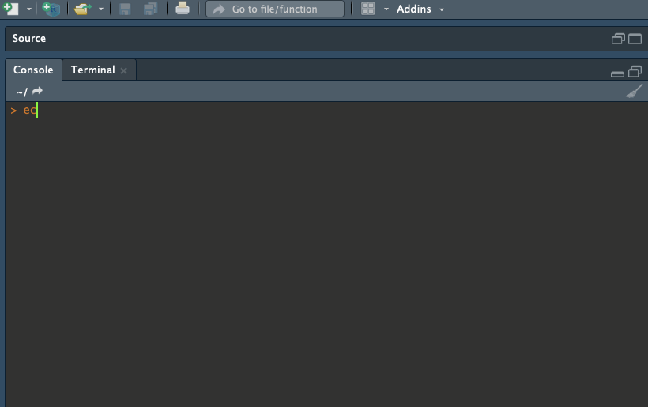

Overview
ecodata is an R data package developed by the Ecosystems Dynamics and Assessment Branch of the Northeast Fisheries Science Center for use in State of the Ecosystem (SOE) reporting. SOE reports are high-level overviews of ecosystem indicator status and trends occurring on the Northeast Continental Shelf. Unless otherwise stated, data are representative of specific Ecological Production Units (EPUs), referring to the Mid-Atlantic Bight (MAB), Georges Bank (GB), Gulf of Maine (GOM), and Scotian Shelf (SS). SOE reports are developed for US Fishery Management Councils (FMCs), and therefore indicator data for Scotian Shelf are included when available, but this is not always the case.
Please consult the technical documentation of SOE indicators before using data sets.
State of the Ecosystem cycle
The main branch of this repository contains the data used in the most recently published State of the Ecosystem reports (Mid Atlantic and New England reports). Data for use in the following years report can be found on the dev branch of the repository. Once the reports are written and the cycle ends this data will be pulled into the main branch and released
Installation
For the last released complete data set
remotes::install_github("noaa-edab/ecodata",build_vignettes=TRUE)For data used in the current developing cycle
remotes::install_github("noaa-edab/ecodata@dev",build_vignettes=TRUE)Loading data sets
- All derived data sets are available once the package has been loaded into the environment. View available data sets using the syntax
ecodata::...

Legal disclaimer
This repository is a scientific product and is not official communication of the National Oceanic and Atmospheric Administration, or the United States Department of Commerce. All NOAA GitHub project code is provided on an ‘as is’ basis and the user assumes responsibility for its use. Any claims against the Department of Commerce or Department of Commerce bureaus stemming from the use of this GitHub project will be governed by all applicable Federal law. Any reference to specific commercial products, processes, or services by service mark, trademark, manufacturer, or otherwise, does not constitute or imply their endorsement, recommendation or favoring by the Department of Commerce. The Department of Commerce seal and logo, or the seal and logo of a DOC bureau, shall not be used in any manner to imply endorsement of any commercial product or activity by DOC or the United States Government.